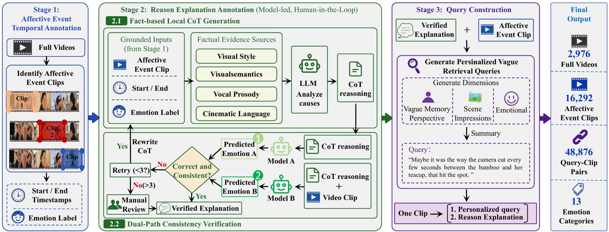

Dataset & Benchmark
VQAU-Bench
Overview
VQAU-Bench is designed for realistic affective understanding in long videos, where users often remember only a vague emotional impression rather than an exact timestamp or a predefined label. Given a full video and an open-ended query, a model must actively search for the relevant affective event instead of classifying a pre-selected clip.
The benchmark evaluates three tightly coupled capabilities: temporal localization of the target event, recognition of its dominant emotion, and generation of an explanation grounded in visual, acoustic, and contextual evidence. Each query is paired with an affective clip, temporal boundaries, an emotion category, and a verified reason explanation, allowing evaluation of whether a model finds the right moment, identifies the right emotion, and explains it with evidence.

Dataset
The benchmark contains long videos, affective event clips, personalized vague retrieval queries, temporal boundaries, emotion labels, and verified reason explanations.
Annotations
Each query–clip pair contains a temporal window, a personalized vague query, an emotion label, and a verified evidence-grounded summary. The released records also retain video and processing identifiers for reproducible evaluation.
Example Annotations
Query
“I kinda remember his fingers moving steadily across the keys on that black piano—felt just right.”
Summary
The segment aligns with the query through a continuous side-profile shot of a pianist’s fingers moving rhythmically across black keys. The steady melody, subtle nodding, static camera, and restrained presentation emphasize mechanical precision rather than dramatic expression, resulting in a Neutral emotional tone.
Query
“I kinda remember a bloody neck wound on a man in a light shirt as he steps into a dark puddle—so fed up.”
Summary
A man in a blood-stained light shirt with a visible neck wound stands near wooden pillars and wall scrolls. His low, hoarse speech, the slow cuts, low-frequency beat, high-contrast lighting, and deliberate step into a dark puddle collectively convey confrontation, defiance, and intense anger.
Query
“I kinda remember a firm handshake on a coastal walkway right before the music swells—felt so light.”
Summary
The clip begins with a firm handshake on a coastal walkway and transitions into rapid cuts of soldiers, green hills, red flags, and a cheering crowd. Swelling orchestral music, driving drums, vivid color, and synchronized collective action create a strong sense of momentum, achievement, and Joy.
Emotion categories: Anger, Anticipation, Disgust, Fear, Horror, Joy, Love, Neutral, Pride, Sadness, Satisfaction, Surprise, and Trust.
Access & License
VQAU-Bench is available for approved academic research, teaching, non-commercial evaluation, and paper reproduction. Download, complete, and sign the agreement, then email it to the contacts below.
Dataset Use License Agreement VQAU-Bench_Dataset_Use_License_Agreement_EN.docxThe agreement should be signed by the responsible person, supervisor, or project leader.
Contact
For any inquiries about the VQAU-Bench dataset, please contact:
Citation
@article{zhang2026affectseek,
title = {AffectSeek: Agentic Affective Understanding in Long Videos under Vague User Queries},
author = {Zhang, Zhen and Yang, Yuhang and Jiang, Yunxiang and Lu, Yuhuan and Lu, Haifeng and Lian, Zheng and Zeng, Runhao and Hu, Xiping},
journal = {arXiv preprint arXiv:2605.05640},
year = {2026}
}